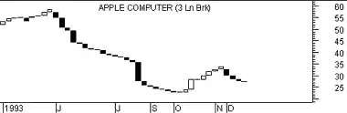

Three Line Break
Overview
Three Line Break charts display a series of vertical boxes ("lines") that are based on changes in prices. As with Kagi, Point & Figure, and Renko charts, Three Line Break charts ignore the passage of time.
The Three Line Break charting method is so-named because of the number of lines typically used.
Three Line Break charts were first brought to the United States by Steven Nison when he published the book, Beyond Candlesticks.
Interpretation
The following are the basic trading rules for a three-line break chart:- Buy when a white line emerges after three adjacent black lines (a "white turnaround line").
- Sell when a black line appears after three adjacent white lines (a "black turnaround line").
- Avoid trading in "trendless" markets where the lines alternate between black and white.
An advantage of Three Line Break charts is that there is no arbitrary fixed reversal amount. It is the price action which gives the indication of a reversal. The disadvantage of Three Line Break charts is that the signals are generated after the new trend is well under way. However, many traders are willing to accept the late signals in exchange for calling major trends.
You can adjust the sensitivity of the reversal criteria by changing the number of lines in the break. For example, short-term traders might use two-line breaks to get more reversals while a longer-term investor might use four-line or even 10-line breaks to reduce the number of reversals. The Three Line Break is the most popular in Japan.
Steven Nison recommends using Three Line Break charts in conjunction with candlestick charts. He suggests using the Three Line Break chart to determine the prevailing trend and then using candlestick patterns to time your individual trades.
Example
The following illustration shows a Three Line Break and a bar chart of Apple Computer.


You can see that the number of break lines in a given month depend on the price change during the month. For example, June has many lines because the prices changed significantly whereas November only has two lines because prices were relatively flat.
Calculation
Line Break charts are always based on closing prices.
The general rules for calculating a Line Break chart are:
- If the price exceeds the previous line's high price, a new white line is drawn.
- If the price falls below the previous line's low price, a new black line is drawn.
- If the price does not rise above nor fall below the previous line, nothing is drawn.
In a Three Line Break chart, if rallies are strong enough to display three consecutive lines of the same color, then prices must reverse by the extreme price of the last three lines in order to create a new line:
- If a rally is powerful enough to form three consecutive white lines, then prices must fall below the lowest point of the last three white lines before a new black line is drawn.
- If a sell-off is powerful enough to form three consecutive black lines, then prices must rise above the highest point of the last three black lines before a new white line is drawn.